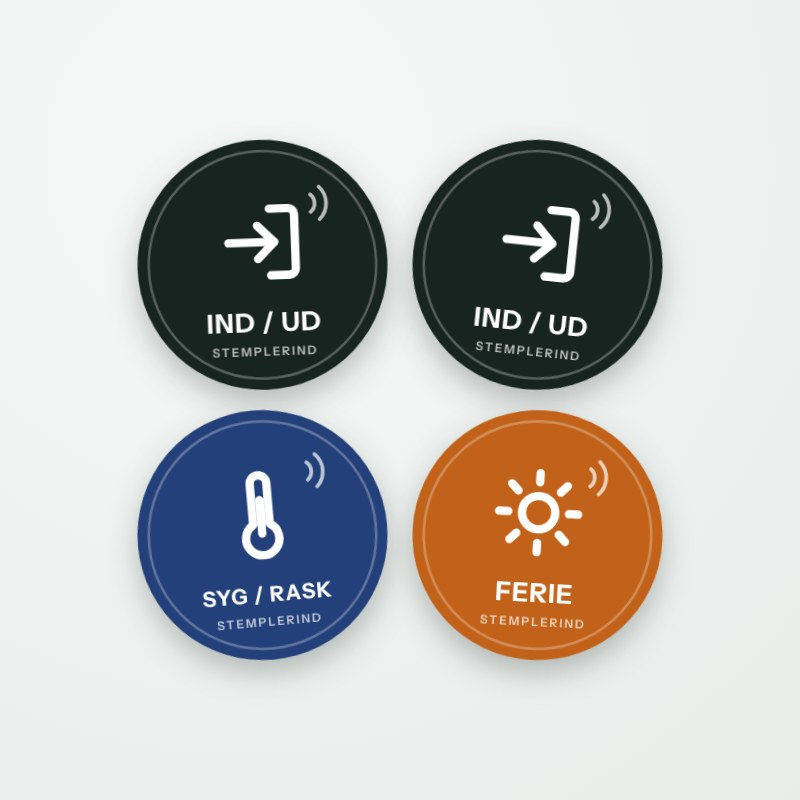
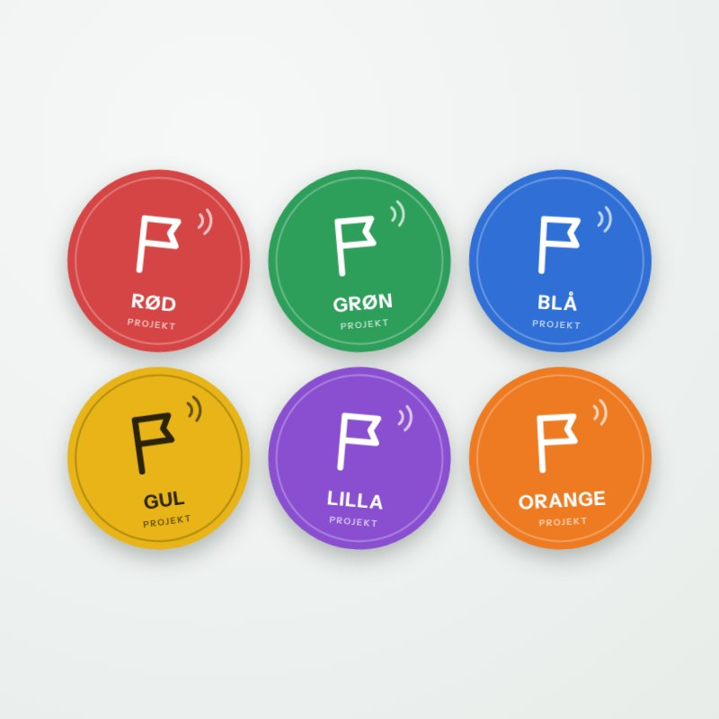
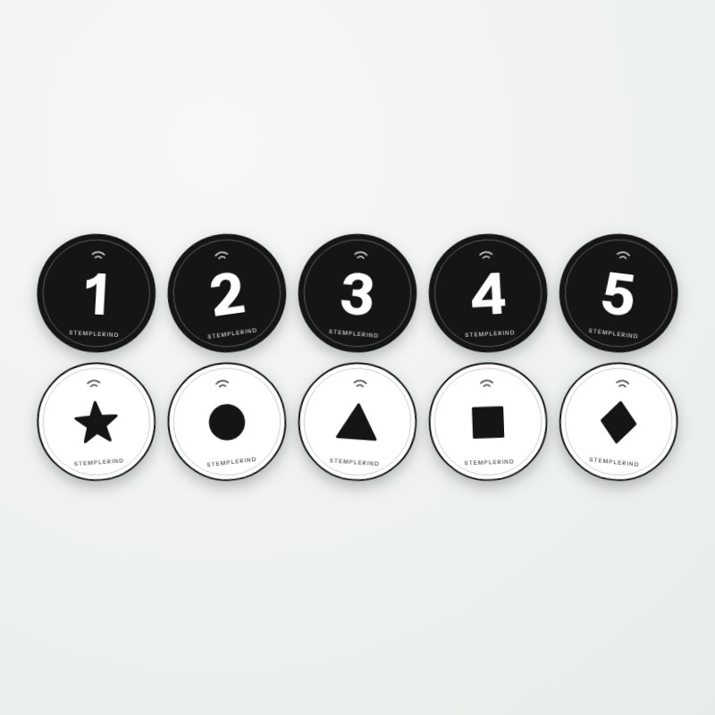
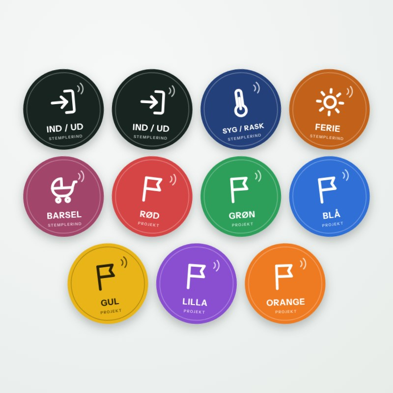
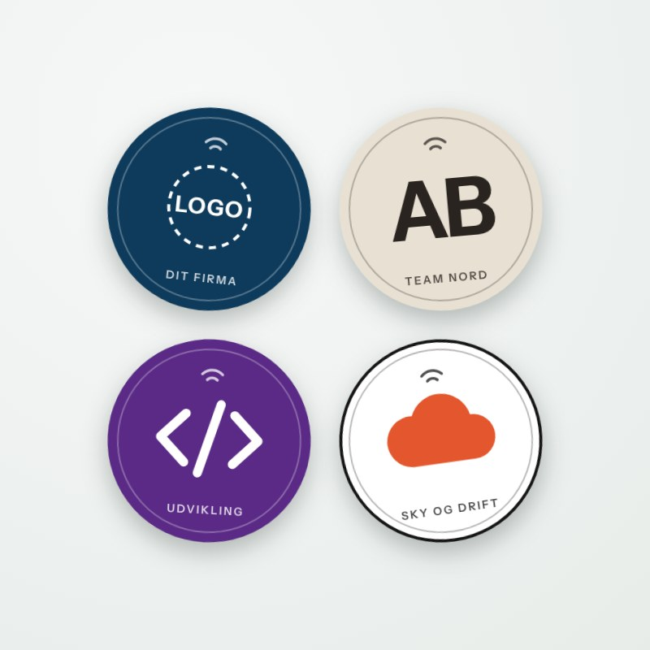
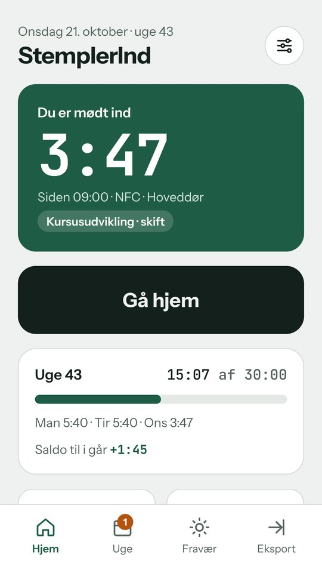
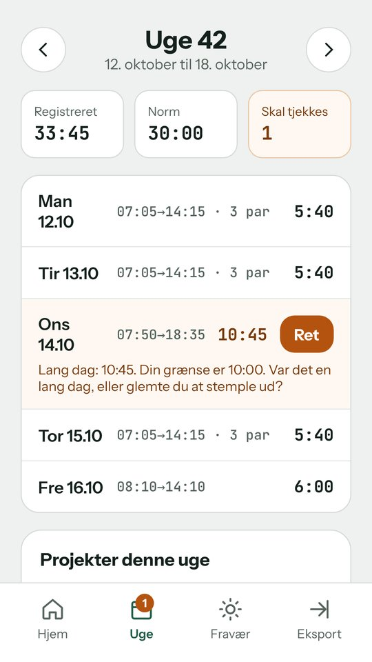
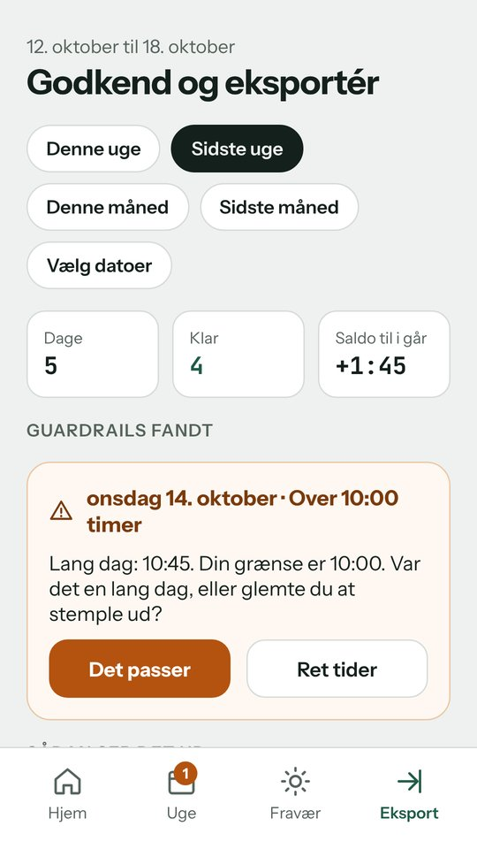

Ind og ud
- 1. scan
- Stempler dig ind.
- 2. scan
- Stempler dig ud. Frokost eller møde ude i byen: scan bare igen.
Ét mærke ved døren stempler dig ind om morgenen og ud igen, når du går. Appen lægger alle perioder sammen, holder øje med din norm og laver timesedlen til dig.
| Ind | Ud | Tid |
|---|---|---|
| 07:05 | 08:10 | 1:05 |
| 09:00 | 12:30 | 3:30 |
| 13:10 | 14:15 | 1:05 |
| I alt | 5:40 |
Appen ved, om du er inde eller ude. Derfor er ét mærke nok, uanset hvor mange gange du går til frokost, til møde eller hjem.
Ved hoveddøren, på skrivebordet eller i bilen. Mærket er et klistermærke på 30 mm og skal ikke have strøm.
Hold telefonen hen til mærket. Den summer, og du er stemplet ind. Du kan fortryde i 30 sekunder.
Samme mærke stempler dig ud. Dagens perioder lægges sammen og står klar i ugen og i eksporten.
Første scanning tænder, næste slukker. Det gælder for ind og ud, for sygdom, for ferie og for barsel.
Rød kan være en kunde, grøn undervisning og blå administration. Første gang du scanner et farvet mærke, opretter appen projektet. Du giver det et navn under Indstillinger.
Til dig, der vil have en rolig sort-hvid stil, eller som har brug for flere projekter. Mærkerne virker præcis som de farvede, og der står ingen tekst på dem, så de passer til alle sprog.
Alle mærker er klar til brug og låst, så ingen kan skrive dem om. Du kan kopiere et mærke og sætte det op flere steder.

Alt hvad du skal bruge for at stemple ind og ud og melde fravær.

Seks farvede mærker til projekter, kunder eller arbejdsområder. Du bestemmer selv, hvad hver farve betyder.

Ti sort-hvide projektmærker med tallene 1 til 5 og fem symboler. Rolige at se på, og uden tekst.

Startpakken, barsel, de seks farvede projektmærker og hele symbolpakken. Til dig, der vil have styr på det hele.

Til firmaer, teams og events. Vi trykker mærkerne med jeres logo, farver eller egne symboler, fx for afdelinger, kunder eller de systemer, I arbejder i. Skriv til os, så aftaler vi antal, design og levering.
StemplerInd er gratis. Den virker med mærkerne, med én knap på skærmen, med en widget og med genveje.



Kun en webadresse, fx https://stemplerind.dk/t/skift, og appens navn. Ingen personlige data. Alle mærker af samme slags er ens.
Nej. Mærket læses med NFC, og alt bliver gemt på telefonen.
Mærket åbner Google Play, så du kan hente den. Næste gang åbner det appen direkte.
Appen giver besked næste dag og foreslår et tidspunkt ud fra dine andre dage. Du kan også rette tiderne selv.
Ja. Køb ekstra Ind og ud-mærker og sæt dem ved døren, på skrivebordet og i bilen. De gør det samme.
Dansk, engelsk, svensk, norsk og tysk. Du skifter sprog med flaget under Indstillinger. De farvede mærker er trykt på dansk, symbolmærkerne har ingen tekst, og alle virker på alle sprog.
Appen kommer først til Android. iPhone-versionen er på vej, og de samme mærker kommer til at virke der.
Nej. Data ligger kun på din telefon. Du bestemmer selv, hvornår du eksporterer en periode og sender den.
Spørgsmål til mærkerne, appen eller en bestilling med eget design. Vi svarer så hurtigt, vi kan.
Du kan også skrive direkte til kontakt@stemplerind.dk